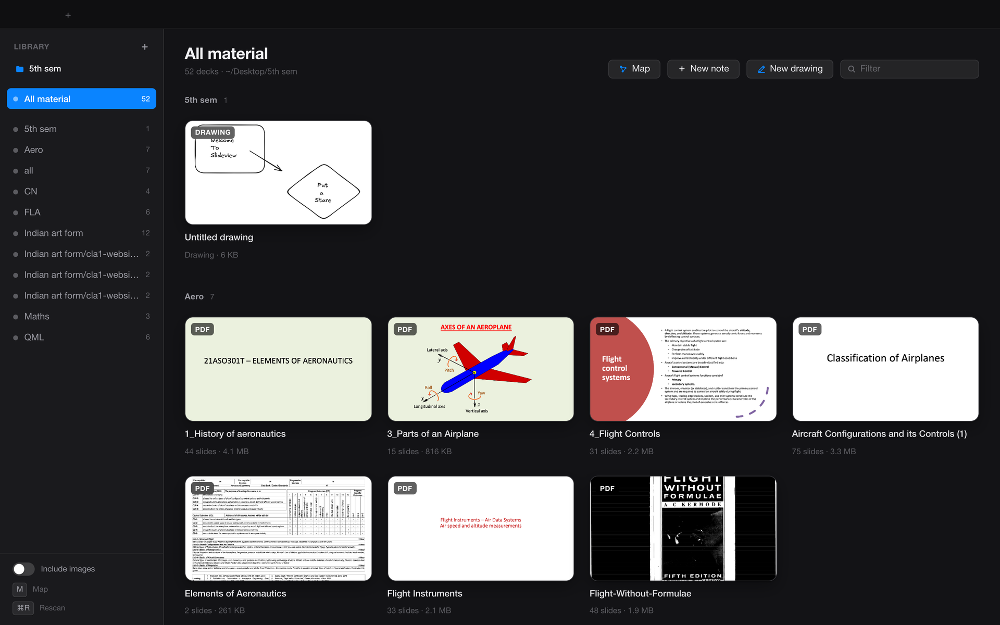
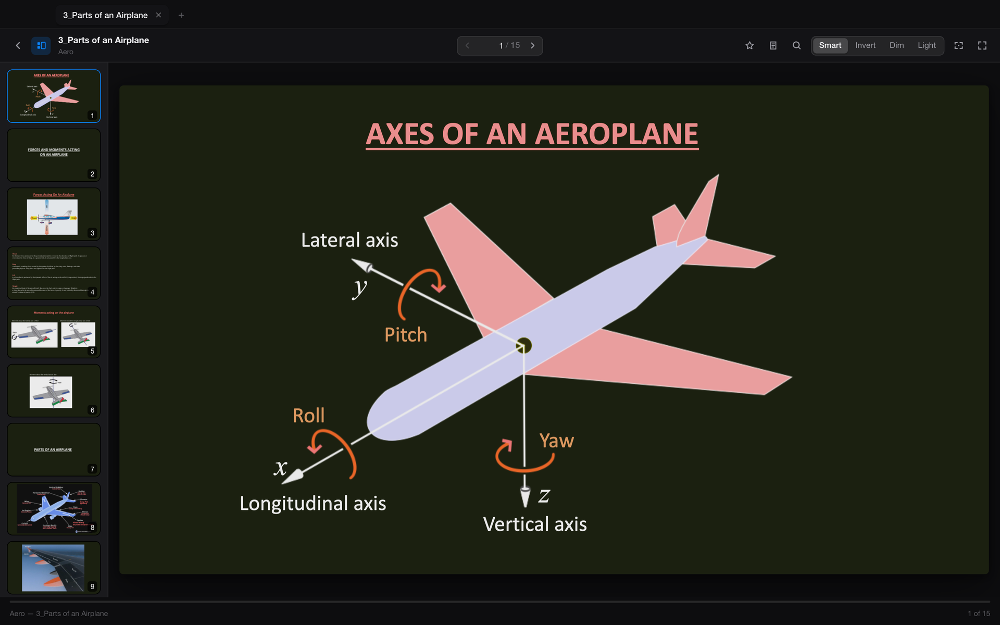
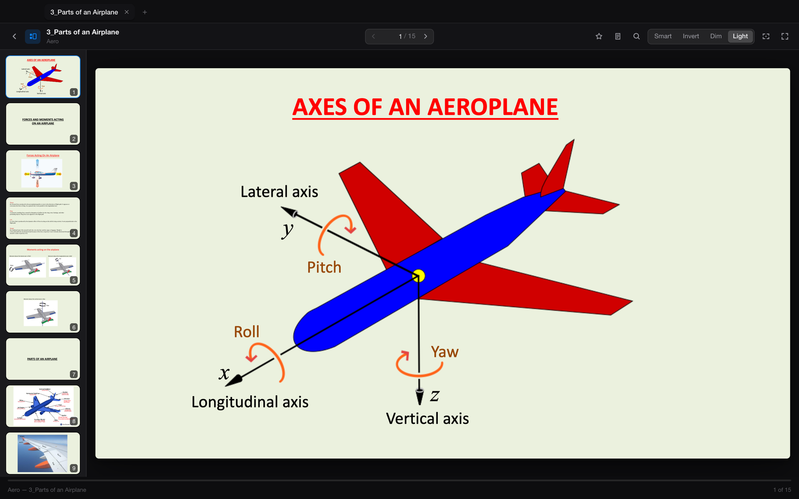
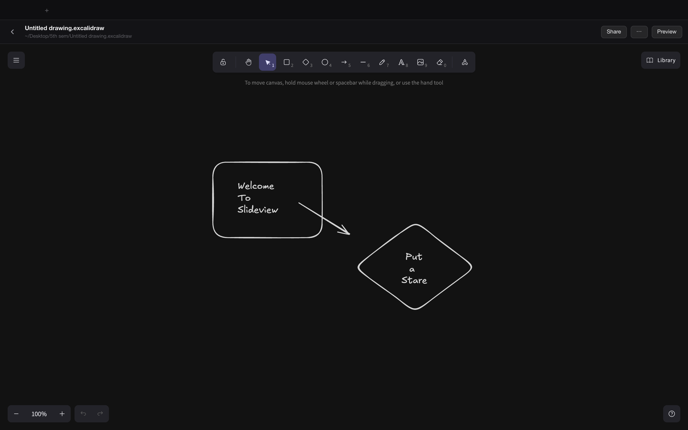
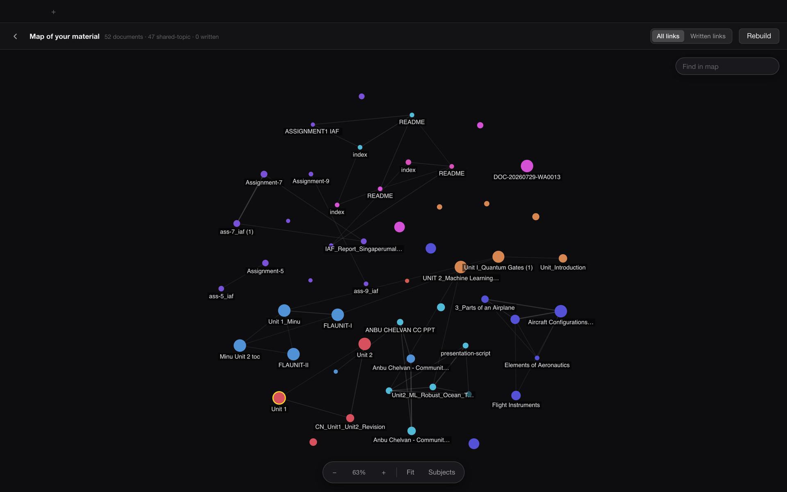

Every lecture file,
one dark library.
A native Mac app for revising from slides, PDFs and notes at night. Offline, free and open source.
Apple Silicon · macOS 13 or later · MIT licence

Dark mode that leaves pictures alone
Most dark readers invert the whole page, so every photo and diagram looks like an X-ray. SlideView inverts the text and keeps images in their real colours. A red heading stays red.
Press D to switch between Smart, Invert, Dim and the original.


A drawing board, built in
The real Excalidraw editor, embedded and offline. Sketch an idea next to the deck it belongs to. Each drawing is an ordinary .excalidraw file in your folder.

A map of what you study
Press M and SlideView links documents that share topics, so you can see which notes belong with which lecture. Links you write yourself show up too.

And the rest
- 40+ formatsPowerPoint, PDF, Word, Markdown, notebooks, spreadsheets and code, opened in tabs.
- Notes per slideSaved as plain files, with stars and search across the deck.
- Zen modeOne key hides everything but the slide.
- Fully offlineNo account and no cloud. The app talks only to itself.
- Your files stay filesNo database and no lock-in. Everything is an ordinary file on disk.
- Never reads your keysCredential files are skipped, never scanned or cached.
Install
- Download SlideView.zip and unzip it.
- Drag SlideView.app to your Applications folder and open it.
- The first time, macOS blocks it because the app is not notarised by Apple. Open System Settings → Privacy & Security and click Open Anyway.
PowerPoint and Excel files also need LibreOffice installed. PDFs, Word files, Markdown and notebooks work without it. Prefer to build it yourself? Clone the repo and run ./build.sh.